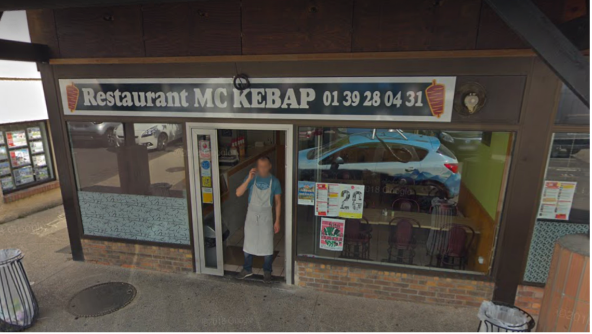

Les saveur ou aussi appelé par tout le monde le grec et le kebab est l’endroit favoris des collégiens en pleine crise d’ado certes, mais aussi un endroit réconfortant après une mâtinés de 4h éreintante ou une mauvaise note mal passée. Avec ses nouvelles recettes discutable, ce fast food local saura vous redonner le sourire alors foncez !
LAU35 LAU35
13/02/22
Nous avons mangé sur place 3 assiettes : kebab, poulet et végétarienne. Riz au lait maison et excellent également.
Tout était très bon et copieux.
Accueil très chaleureux et agréable.
A recommander.
Marie Moreau
24/03/22
Une pépite ! Le kebab 5 étoiles !
Que du FRAIS y compris les frites qui sont un pur délice, la viande est goûteuse...Tout est maison, vraiment maison !
Il y a aussi de quoi satisfaire les végétariens avec des produits de qualités.
Bref une belle découverte à ne pas manquer, avec une amplitude horaire pratique pour les clients.
Les patrons sont adorables avec une chouette équipe ce qui ne gâte rien.
nathann bertrand
21/03/21
Acceuil inexistant, à l'exception de Pascal (personnel en extra).
Nourriture, malgré l'accueil, plutôt correcte, bien qu'il y ait des rectifications à faire sur certains points tels que frites manquant de croustillant, le pain qui se déchire, crudités fadent et presque inexistantes et sauces hyper liquides en pot et de surcroît vendues en supplément.
Ravi d'y être allé une fois pour tester, ce sera la dernière.
Partagez votre avis !